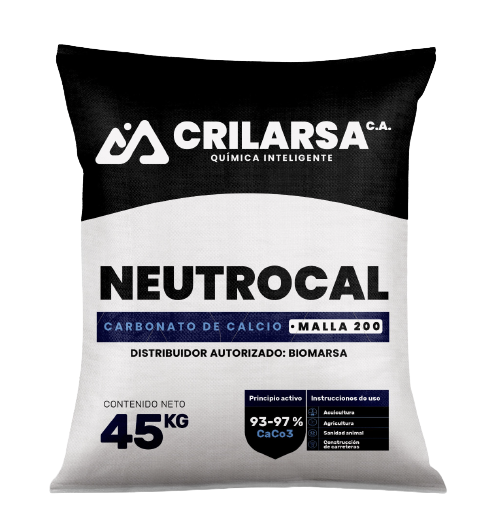

CaCO₃ · Neutrocal
Carbonato de calcio
Mineral calcáreo molido, nuestro producto de mayor demanda. Se utiliza para corregir la acidez del suelo y del agua y como fuente de calcio.
- Aplicaciones
- Agricultura, acuicultura, sanidad animal y construcción de carreteras.
- Presentación
- Saco de 45 kg, malla 200. Otras granulometrías bajo consulta.